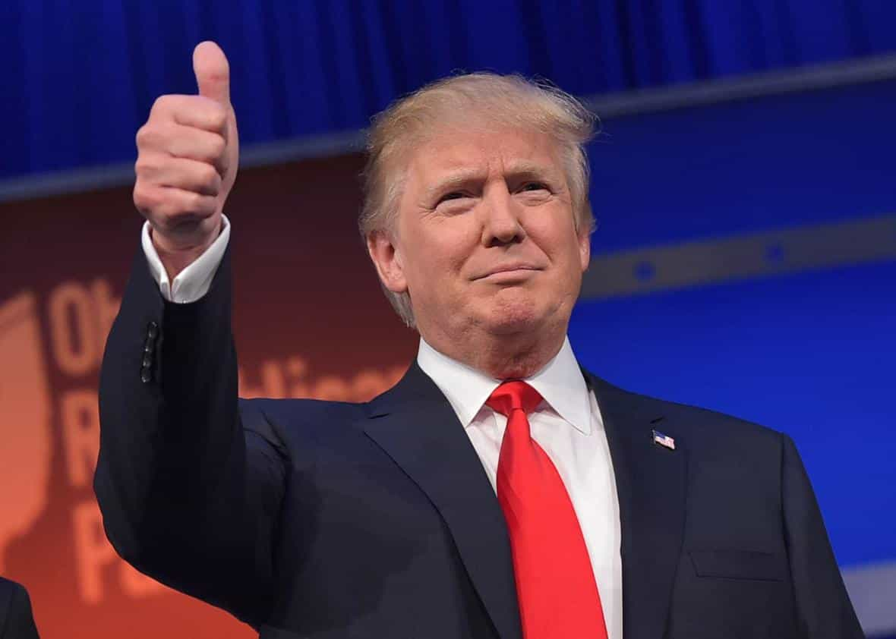

< < < Back
4 Reasons Why Black Lives Matter Protestors Are Domestic Terrorists – Return Of Kings
Black Lives Matter needs to be listed as a domestic terrorist group that incites and perpetuates mass violence on the streets of America, not to mention condones the sky-high homicide rates inflicted upon black communities by other blacks. The following reasons explain both the danger of Black Lives Matter attention-seekers and why they are aptly described as domestic terrorists:
1. They throw their own kind under the bus
Much rarer white-on-black attacks are “racist,” but black-on-black crime is habitually tolerated and condoned by Black Lives Matter.
The overwhelming proportion of black victims of violence, those felled by other blacks, are pawns to be sacrificed by Black Lives Matter. Proper freedom fighters and justice campaigners fight for what is good and for the people they claim to represent. Yet Black Lives Matters operatives happily throw the vast majority of blacks killed by guns and knives under the proverbial bus.
90%+ percent of all black victims of homicide are killed by other blacks. Of the remaining black victims, only the smallest fraction are killed legally in self or community-defense by police, let alone killed illegally by white police. The propensity to murder blacks is squarely concentrated in black communities themselves, but Black Lives Matter refuses to stand up for the vast majority of all those violently killed and maimed within the African-American population.
And it gets worse. Breitbart poignantly pointed out that it would take 40 years for the number of blacks killed by police to match the number of blacks killed by other blacks in 2012. And police deaths represent an overall number that does not consider whether the use of lethal force was legitimate or illegitimate (it’s usually the former). Meanwhile, while they riot and abuse innocent people over the death of adult, mostly criminally-inclined men, Black Lives Matter terrorists forget the huge numbers of children murdered within black communities, notably in black-on-black violence hotspots like Chicago. Children like Tyshawn Lee:

Instead of going after people like Tyshawn’s killer and the widespread mentality that motivated him (in this case, revenge on Tyshawn’s father), Black Lives Matter thugs go after police, who almost always “kill” on justified grounds.
2. They ignore any and all facts and opt for a fantasyland of white “racism”
Just like the Islamist terrorists betting on 72 virgins in Paradise in return for blowing themselves up, Black Lives Matters activists come in with a preconceived idea that they refuse to reconsider in light of verifiable facts. Although we at Return Of Kings disagree with his other findings, the recent work of black Harvard economist Roland G. Fryer confirms that there is no bias against African-Americans when it comes to police shooting deaths. In fact, whites are more likely to be shot by police when they have not previously attacked police than blacks.
Even before Fryer’s results were released, the facts and stories available could be deeply correlated with the notion that blacks are not fundamentally targeted in police shootings. Not that Black Lives Matters would give a damn about them. For a start, accounts of shooting deaths involving unarmed whites are routinely swept under the carpet.
Caucasian Dylan Noble, a 19-year-old, was gunned down by Fresno, California police before either Alton Sterling or Philando Castile were in Louisiana and Minnesota respectively. Yet full coverage of his death has largely been relegated to non-liberal internet publications perennially ignored by big corporate advertising dollars, such as Breitbart, or second-place metropolitan newspapers in the vein of The New York Post. CNN, The New York Times, Salon and other biased outlets are deliberately ignoring victims like Noble to maximize the attention being thrown at gangbangers like Sterling and Castile.
The situation is even more damning for Black Lives Matter terrorists when actual statistics are used. Just as blacks in a nearly 30-year period committed over half of all homicides, being just 13% of the population, blacks have more negative interactions with the police. Disproportionate numbers of black police shootings, relative to the total African-American population, only occur because blacks are more likely to commit serious crimes and pose a threat to the community in the first place. The publicizing of fake or even genuine individual examples of police shooting unarmed blacks simply cannot account for the greater criminality evident in black communities, criminality requiring significant police intervention.
3. They idolize compulsively violent, criminal and sadistic “men”
Alton Sterling showing the stock standard “victim” of police “racism.” Note the lack of good parenting skills, non-criminal persona, and non-provocative behavior.
Fact: Michael Brown was a thug and had violently robbed a convenience store prior to his “murder.” Fact: Alton Sterling was a convicted sex offender. Fact: Philando Castile was a Crip gang member. Black lives matter to the point where Black Lives Matter can only usually bring up examples of black men with serious criminal inclinations and/or convictions to make their point. Why the paucity of law-abiding, self-respecting black men being gunned down by police?
The inability of BLM terrorists to conjure up credible poster boys to further their “police racism” agenda has been a constant feature of their crooked, terroristic campaign. It shows no sign of abating, either. Enabled by an obsequious media, these race hustlers have had to selectively present the images of departed saints like Brown, Sterling and Castile, only using the nicest, rather than representative, photographs and anecdotes of them to frame their stories.
4. They use violence and intimidation to achieve their aims
Part of the reason why BLM terrorists have largely moved on from Michael Brown and similar poster boys is because of the memory of the Ferguson, Missouri riots. Local black man dies after committing a robbery and no charges are laid? “Let’s riot!” Liberal mediums such as the BBC were unable to avoid covering what were violent, indefensible rampages. Thousands were exposed to risk of death or injury, or had their property or livelihoods stolen, just to satiate the atavistic, impulsive urges of Black Lives Matter supporters.
The violence did not stop, however, when the attention shifted from Ferguson. And, in the end, numerous other incidents have isolated and marginalized all views that oppose Black Lives Matter precepts. A plurality of 44% of people (probably a conservative figure) believe that African-Americans receive equal treatment under the law. Where are these people? Obviously most of them feel silenced by the pathological violence of BLM and its supporters. Violence like this in Baltimore:
Furthermore, Black Lives Matter apologists have not only called for the deaths of police in their marches, they have also done so repeatedly online, where these threats and intentions are most easily observed and documented by the public. One need not wonder much why officers were recently gunned down in Dallas in light given these kinds of deplorable BLM attitudes.
Act now to help remove the social leech of Black Lives Matter

It is time for everyone to do their bit and challenge the lies and calls to violence that are at the heart of the Black Lives Matter terrorist organization. The White House has declined to proscribe BLM as a terrorist entity, but as more people are exposed directly and indirectly to its deliberate destruction, the forces opposed to it will only grow.
Presently, the best way to counter the Black Lives Matter disease is to ensure that Donald Trump is elected the 45th President of the United States of America.
 If you like this article and are concerned about the future of the Western world, check out Roosh's book Free Speech Isn't Free. It gives an inside look to how the globalist establishment is attempting to marginalize masculine men with a leftist agenda that promotes censorship, feminism, and sterility. It also shares key knowledge and tools that you can use to defend yourself against social justice attacks. Click here to learn more about the book. Your support will help maintain our operation.
If you like this article and are concerned about the future of the Western world, check out Roosh's book Free Speech Isn't Free. It gives an inside look to how the globalist establishment is attempting to marginalize masculine men with a leftist agenda that promotes censorship, feminism, and sterility. It also shares key knowledge and tools that you can use to defend yourself against social justice attacks. Click here to learn more about the book. Your support will help maintain our operation.
Read More: If Black Lives Matter, Blacks Need To Stop Killing Each Other